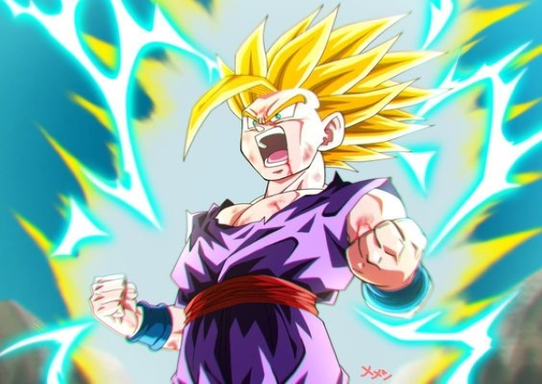

Transformações de Gohan
Oozaro
Esta transformação ocorre quando uma pessoa com genes Saiyajin (e cauda) olha diretamente para a lua cheia, ou algo que simula seus efeitos, como a Lua Artificial de Vegeta. O resultado é as luzes da lua estimulando uma glândula em suas caudas, causando uma transformação inevitável. Esta é uma transformação completamente genética, então ela afeta grandemente o estado mental de Gohan. Como Gohan nunca teve treinamento, ele perde toda forma de controle mental, tornando-se uma besta primata. Porém, durante a luta contra Vegeta, as palavras de Goku conseguem chegar a Gohan para ele ter pensamentos racionais e focar em seu inimigo real. Gohan se transforma apenas três vezes na série, duas vezes enquanto treinava com Piccolo, e uma última vez enquanto lutava com Vegeta.
Super Saiyajin 1
Gohan é uma das primeiras pessoas a completamente dominar a forma Super Saiyajin. Gohan aprendeu a aperfeiçoar a forma Super Saiyajin com seu pai, quando seu pai sugeriu que eles ficassem transformados por períodos estendidos de tempo para que eles pudessem dominar o Super Saiyajin, incluindo os efeitos negativos. Este domínio do Super Saiyajin permite controle total da quantidade de energia e consumo, completamente diminuindo o esforço no corpo. Gohan continua a usar esta forma durante a saga Boo, particularmente enquanto treina com Goten.
Super Saiyajin 2
Gohan é o primeiro e mais jovem personagem em Dragon Ball a chegar em Super Saiyajin 2, conseguindo-a na idade de 11 anos. Isto ocorreu quando seu poder adormecido foi liberado completamente pela sua raiva em ver Cell machucando seus amigos e matando o pacífico Androide 16 (embora seja revelado por Goku que Gohan na verdade se transformou enquanato treinava na Sala do Tempo, mas estava muito exausto para manter a forma). Enquanto nesta forma, o cabelo de Gohan levanta todo para cima com a exceção de uma mecha de cabelo que fica para baixo, e ele fica rodeado por eletricidade, Uma coisa é notável quando ele manifesta esta transformação: sua natureza completamente muda, o dando uma mente quase sádica. Isto é o completo oposto de sua relutância e inocência quando ele não está transformado. O exemplo mais notável é seu desejo em fazer Cell sofrer antes de matá-lo, enquanto antes de ascender ao Super Saiyajin 2, ele havia deixado claro que não queria machucar ou nem lutar com Cell.
Grande Sayaman
O Grande Saiyaman é o alter ego de Gohan e uma tentativa de esconder sua identidade secreta de seus amigos da escola em Satan City. O Grande Saiyaman nasceu pela primeira vez quando Gohan se transformou em Super Saiyajin para se disfarçar quando ele lutava uns ladrões na manhã de seu primeiro dia na escola. Porém, seus amigos (e particularmente, Videl) começaram a notar similaridades estranhas entre ele e o misterioso "Guerreiro Dourado" (como eles descreviam sua forma Super Saiyajin). Sabendo que sua identidade poderia ser descoberta, mas querendo proteger a cidade do crime, ele diz a Bulma se ela pode inventar um dispositivo que poderia mudar sua aparência instantaneamente. Com sua nova fantasia pronta e fácilmente acessível ao apertar de um botão, ele agora protege a cidade sem sua identidade ser descoberta.
Místico
O poder de Gohan quando o potencial máximo de seu poder adormecido é desbloqueado durante a saga de Boo. Este poder foi conseguido após uma cerimônia especial feita pelo Velho Kaiohshin. Embora esta técnica não seja exclusiva para Gohan já que a cerimônia pode ser usada para desbloquear o potencial de qualquer um, em Gohan foi mais difícil por causa de seu potencial incrível diferente de qualquer outra pessoa que já foi feita este ritual antes. Gohan ativa esta habilidade igual a como ele se transforma em Super Saiyajin, mas a cor de sua aura, cabelo e olhos não mudam. Apenas diferenças súbitas estão presentes, como características faciais mais pronunciadas, cabelo mais para cima, e uma aura branca grande. Quando usada pela primeira vez, a força de Gohan ultrapassa todas suas outras formas. O poder de Gohan nesta forma é tanto que ele completamente ultrapassou Super Boo em sua forma normal, casualmente pondo o monstro em submissão, e é superior a Super Boo (Piccolo, Goten e Trunks absorvidos), e é quase igual a de Super Boo após absorver Gotenks e Piccolo, embora Super Boo derrote a Gohan devido as suas técnicas únicas e os poderes de suas vítimas de absorção.